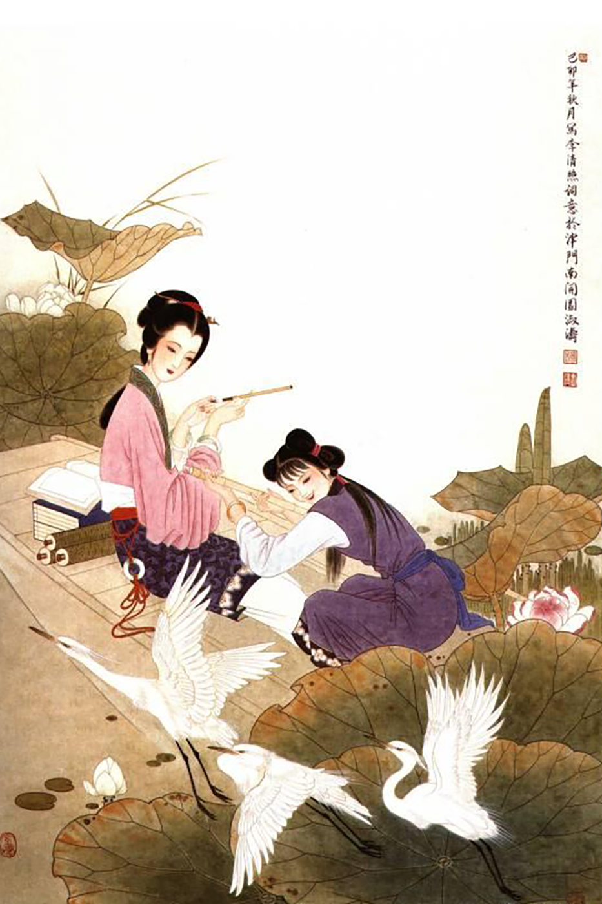
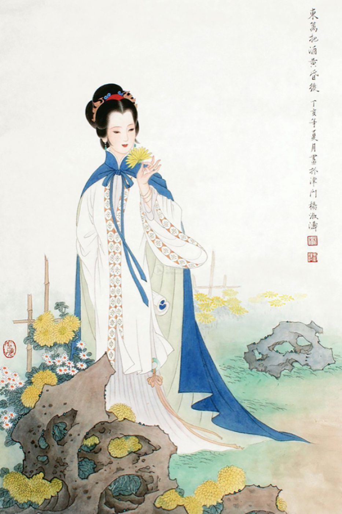
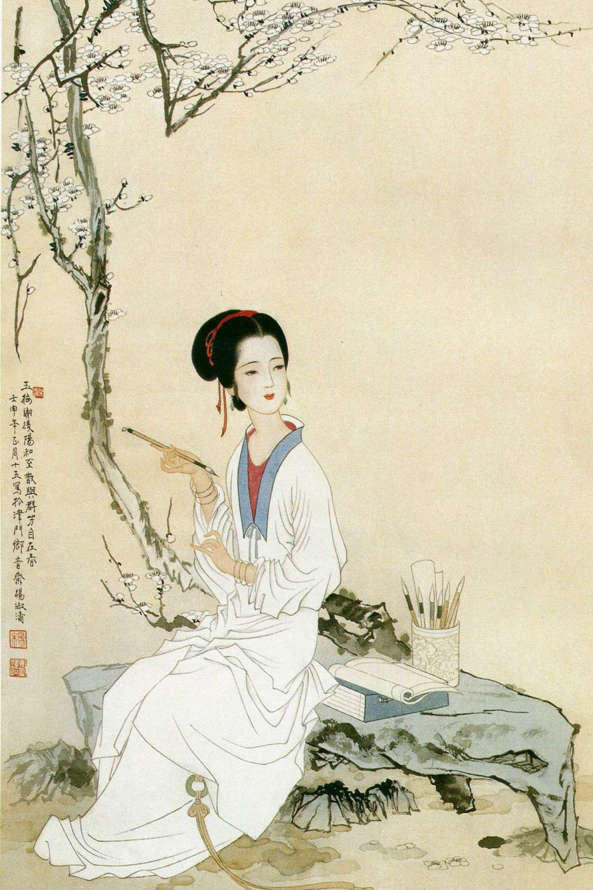
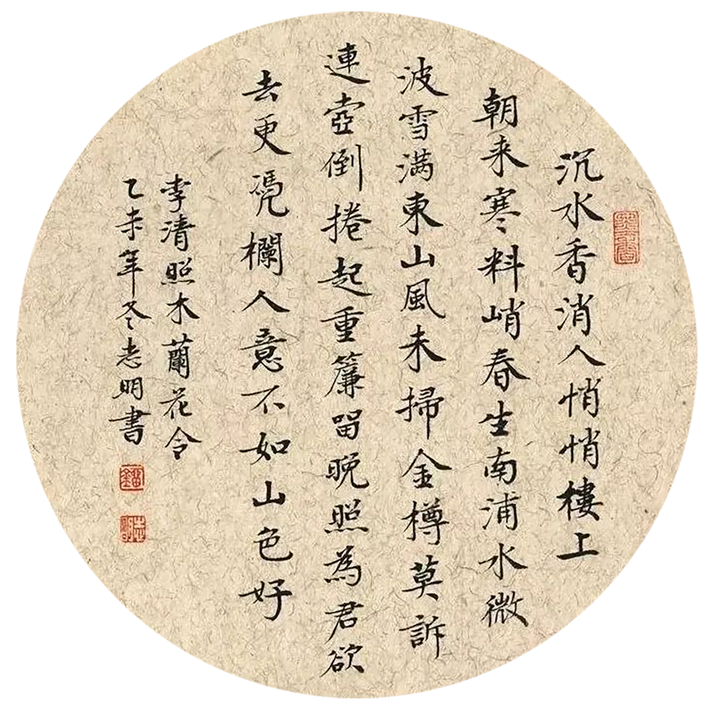

April is National Poetry Month, and to commemorate, we’ll be taking a look at famous Chinese poets this month in our Chinese Lives series. Tang Dynasty (618–907 CE) poets get the most press — Lǐ Bái 李白 and Dù Fǔ 杜甫 are held on par with Shakespeare — but these men are just the tip of the iceberg.
Lǐ Qīngzhào 李清照 (1084 – c.1155) is one of the best-known female writers in Chinese history. At a time when women commonly burned their poems rather than have them read in public, Li used hers to publicly criticize the government and male peers. She was a defiant visionary who turned years of struggle into lines of startling originality, and today is known as “the most talented woman in history” 千古第一才女 (qiān gǔ dì yī cáinǚ).
Lǐ Qīngzhào 李清照 (1084 – c.1155) is one of the best-known female writers in Chinese history. At a time when women commonly burned their poems rather than have them read in public, Li used hers to publicly criticize the government and male peers. She was a defiant visionary who turned years of struggle into lines of startling originality, and today is known as “the most talented woman in history” 千古第一才女 (qiān gǔ dì yī cáinǚ).
Li Qingzhao, pseudonym Householder of Yi'an (易安居士). Li Qingzhao was born in 1084, in Zhangqiu located in modern Shandong province. She was born to a family of scholar-officials, and her father was a student of Su Shi. The family had a large collection of books, and Li was able to receive comprehensive education in her childhood. From a very young age, she was unusually outgoing for a woman from a scholar-official family.

Born into a prominent literary family, Li was an iconoclast from the start. Women in the Song Dynasty (960–1279) stayed indoors. They didn’t discuss politics, and only spoke when spoken to. Imagine the surprise amongst leading male poets when a young girl 40 years their junior released two poems charging the Tang Dynasty — whose government they considered sacrosanct — with weakness and corruption, in verses as good as their own. At just 17, Li Qingzhao made a name for herself.
Before she got married, her poetry was already well known within elite circles. In 1101 she married Zhao Mingcheng, with whom she shared interests in art collection and epigraphy. They lived in present-day Shandong. After her husband started his official career, he was often absent. They were not particularly rich but shared enjoyment of collecting inscriptions and calligraphy which made their daily life count and they lived happily together. This inspired some of the love poems that she wrote. Li and her husband collected many books. They shared a love of poetry and often wrote poems for each other as well as writing about bronze artifacts of the Shang and Zhou dynasties. They pawned clothes and went hungry to slowly build up a vast library, their nights whiled away with literary drinking games such as this one: An event would be chosen from a pile of books, and the first person to name the book, chapter, page, and line it was found on would win (Li records, perhaps with fond nostalgia, of holding her tea high over her head when victorious, laughing so hard it splattered down her gown).

The Northern Song capital of Kaifeng fell in 1127 to the Jurchens during the Jin–Song wars. Fighting took place in Shandong and their house was burned. The couple took many of their possessions when they fled to Nanjing, where they lived for a year. Zhao died in 1129 en route to an official post. The death of her husband was a cruel stroke from which Li never recovered. It was then up to her to keep safe what was left of their collection. Li described her married life and the turmoil of her flight in an Afterword to her husband's posthumously published work, Jīn Shí Lù (金石錄). Her earlier poetry portrays her carefree days as a woman of high society, and is marked by its elegance.
Along with victory, she craved stability. It led her into a disastrous second marriage, Li later branding the man gold-digging, abusive, and “a worthless shyster.” A woman remarrying would have raised eyebrows, but she took it a step further into outright scandal when she divorced him just three months after. A woman as unorthodox as Li Qingzhao inevitably risked alienation. Although her talent was never questioned, a woman who searched for inspiration by walking alone on the city walls during snowstorms was badly suited to the demure roles and manners of a Song woman. One 10-year-old girl spurned her as a potential tutor because “literary ability is not something appropriate for a woman.” Although legend says she was generally ostracized after her divorce, continued invitations to present poems at court suggest she still held at least some status. Her final years are foggy, contemporaries writing them off in a brief afterword. According to the poet Cháo Gōngwǔ 晁公武, “she wandered about the rivers and lakes until she died,” but we don’t know for certain if this is true.
Along with victory, she craved stability. It led her into a disastrous second marriage, Li later branding the man gold-digging, abusive, and “a worthless shyster.” A woman remarrying would have raised eyebrows, but she took it a step further into outright scandal when she divorced him just three months after. A woman as unorthodox as Li Qingzhao inevitably risked alienation. Although her talent was never questioned, a woman who searched for inspiration by walking alone on the city walls during snowstorms was badly suited to the demure roles and manners of a Song woman. One 10-year-old girl spurned her as a potential tutor because “literary ability is not something appropriate for a woman.” Although legend says she was generally ostracized after her divorce, continued invitations to present poems at court suggest she still held at least some status. Her final years are foggy, contemporaries writing them off in a brief afterword. According to the poet Cháo Gōngwǔ 晁公武, “she wandered about the rivers and lakes until she died,” but we don’t know for certain if this is true.
Li’s song lyrics have been enshrined in modern textbooks across China. Contemporaries saw the song lyric (词 cí) as side-show entertainment at banquets, ditties written by male ghost-writers for wispy dancing girls, but Li took no quarter with such writers, labeling their verses slapdash and lackluster. Instead, she wrote songs that are introspective, sincere, and deeply personal. Very few survived beyond slivers of verse quoted in passing by contemporaries, but those that did still ring fresh and true to modern Chinese ears.
There is genius in Li’s lyrical simplicity. One famously opens with seven double characters: 寻寻觅觅, 冷冷清清, 凄凄惨惨戚戚 (xúnxún mìmì, lěnglěng qīngqīng, qīqī cǎncǎn qīqī) — “Searching, hunting, seeking, looking, / so chilly and yet so clear. / Distressed, dismal, and forlorn.” Poets had doubled characters before, but seven was unprecedented. If someone looks like they are wasting away with misery, the go-to phrase is 人比黄花瘦 (rén bǐ huánghuā shòu) — “You’re more shriveled than the yellow flowers.” If resigning themselves to loneliness, some choose to say, especially these days, 不如向, 簾儿底下, 听人笑语 (bù rú xiàng, lián er dǐ xia, tīng rén xiào yǔ) — “Better to sit behind / lowered blinds / and listen to others’ talk and laughter.”
There is genius in Li’s lyrical simplicity. One famously opens with seven double characters: 寻寻觅觅, 冷冷清清, 凄凄惨惨戚戚 (xúnxún mìmì, lěnglěng qīngqīng, qīqī cǎncǎn qīqī) — “Searching, hunting, seeking, looking, / so chilly and yet so clear. / Distressed, dismal, and forlorn.” Poets had doubled characters before, but seven was unprecedented. If someone looks like they are wasting away with misery, the go-to phrase is 人比黄花瘦 (rén bǐ huánghuā shòu) — “You’re more shriveled than the yellow flowers.” If resigning themselves to loneliness, some choose to say, especially these days, 不如向, 簾儿底下, 听人笑语 (bù rú xiàng, lián er dǐ xia, tīng rén xiào yǔ) — “Better to sit behind / lowered blinds / and listen to others’ talk and laughter.”

Only around a hundred of her poems are known to survive, mostly in the ci form and tracing her varying fortunes in life. Also a few poems in the shi form have survived, the Afterword and a study of the cí form of poetry. Her life was full of twists and turns and her poems can be split into two main parts - the dividing line being when she moved to the south. During the early period, most of her poems were related to her feelings as a maiden. They were more like love poems. After her move to the south, they were closely linked with her hatred of the war against the Jurchens and her patriotism. She is credited with the first detailed critique of the metrics of Chinese poetry. She was regarded as a master of wǎnyuē pài (婉约派) "the delicate restraint".

